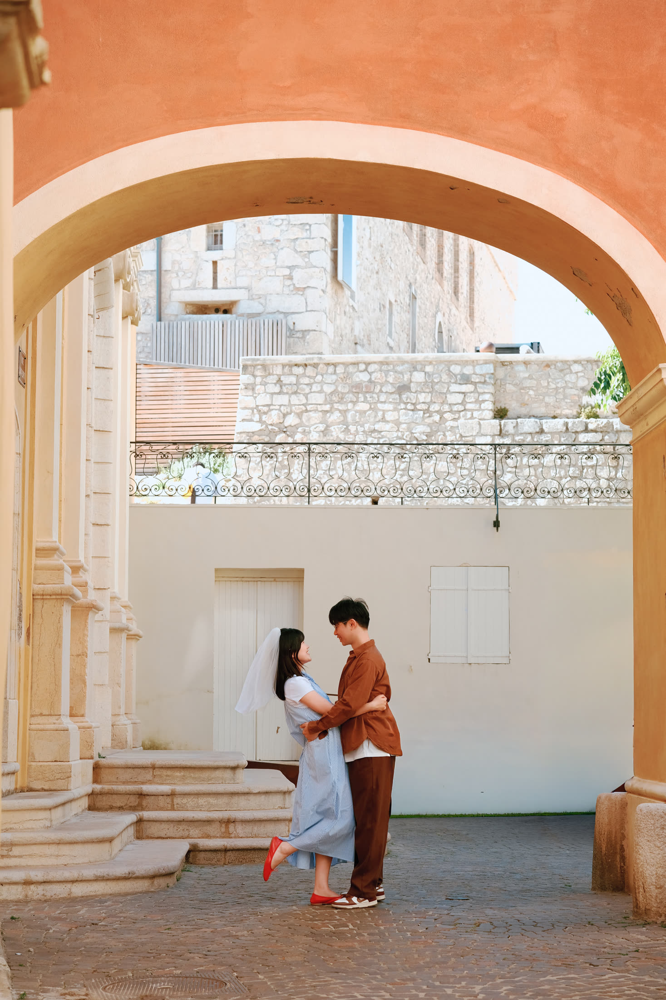
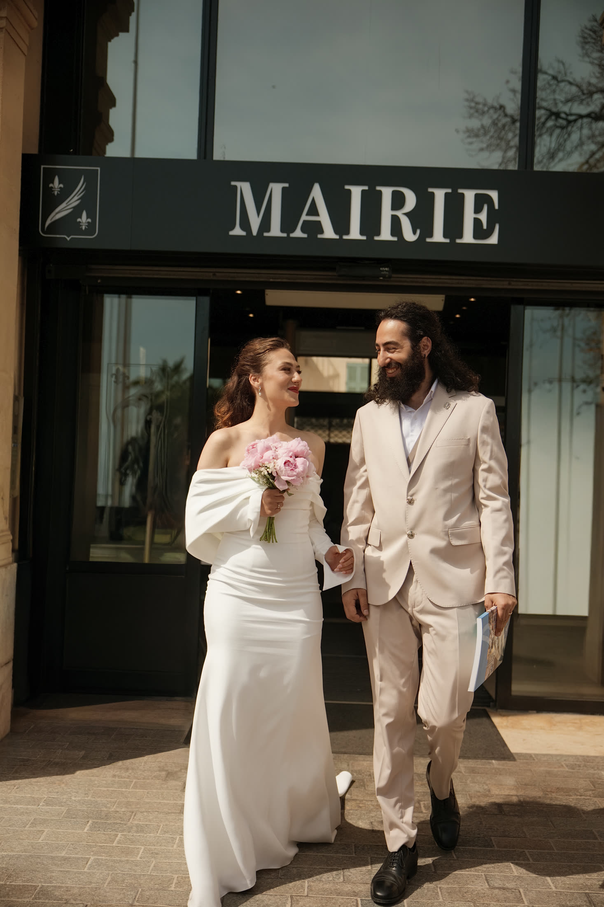
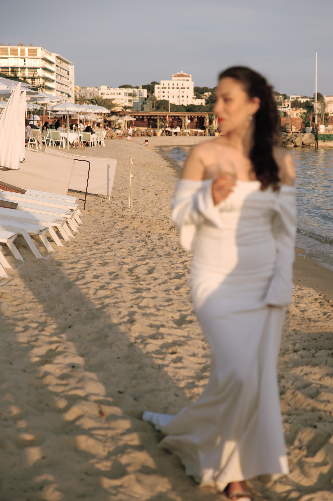
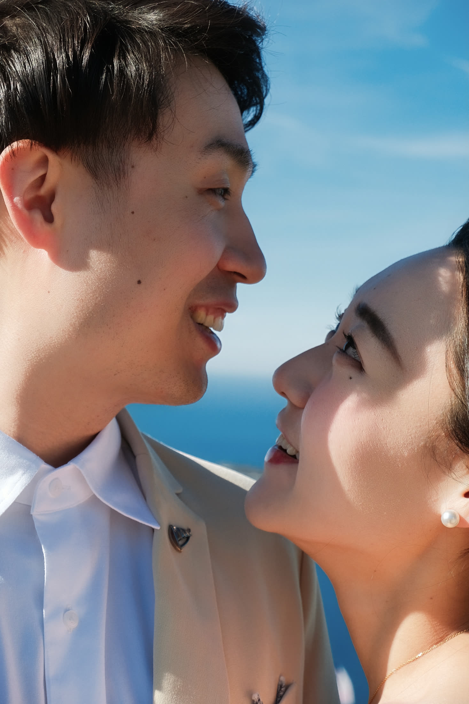
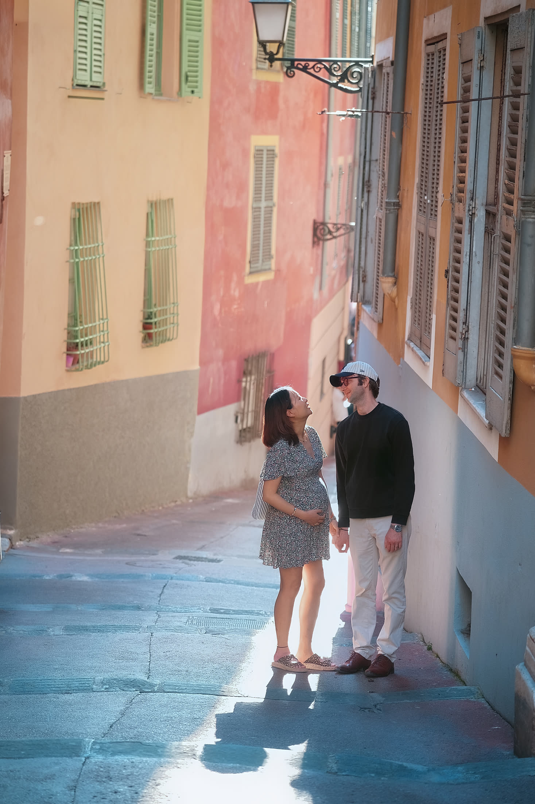
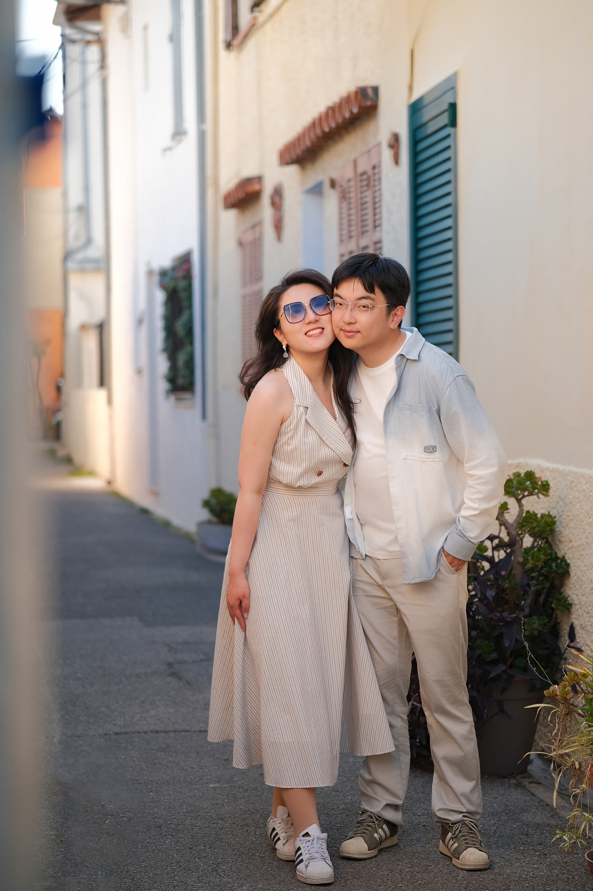

看作品时，你可以先感受
你是否喜欢这种自然光、不过度摆拍、带一点电影感的画面。比起一张完美姿势，Fiona 更在意人物之间真实的靠近和当下的情绪。
精选作品
这里整理 Fiona 拍摄婚礼、私奔、情侣、订婚和肖像时最重视的画面气质：自然、亲密、有呼吸感，也保留真实发生的情绪。

筛选作品






你是否喜欢这种自然光、不过度摆拍、带一点电影感的画面。比起一张完美姿势，Fiona 更在意人物之间真实的靠近和当下的情绪。
可以先从你喜欢的氛围开始：安静一点、浪漫一点、旅行感多一点，或者更接近日常。咨询时把喜欢的方向发来就好。
喜欢这种方向？
如果你正在筹备婚礼、私奔或订婚拍摄，可以先发日期和地点，Fiona 再判断是否适合。